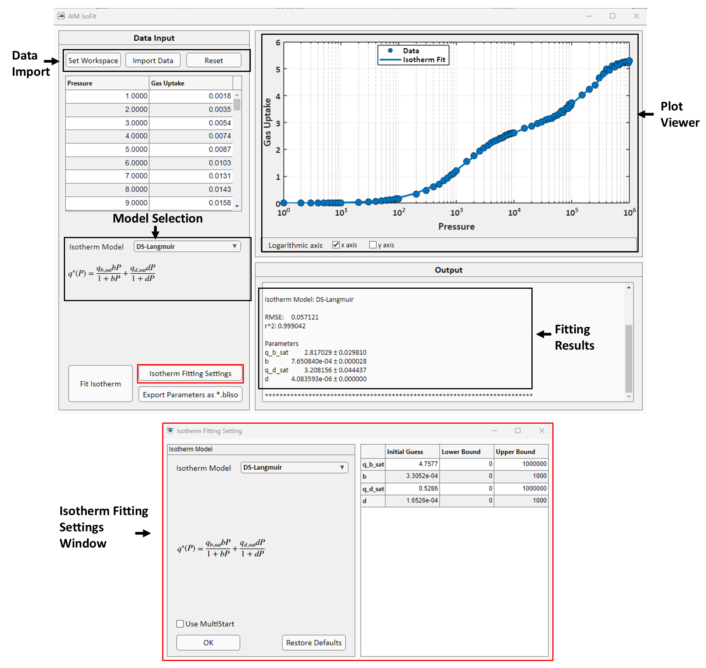

IsoFit
IsoFit is the module for isotherm model fitting to single temperature isotherm data. IsoFit GUI is shown below:
{kind=link}
Watch how to use IsoFit here
1. Isotherm Models
IsoFit supports the following isotherm models:
Isotherm Models |
Isotherm Expression |
Parameters |
|---|---|---|
Langmuir |
\(q = \frac{q_{sat} b P}{1 + b P}\) |
\(q_{sat},\ b\) |
Dual-site Langmuir |
\(q = \frac{q_{sat,1} b_{1} P}{1 + b_{1} P} + \frac{q_{sat,2} b_{2} P}{1 + b_{2} P}\) |
\(q_{sat,1},\ b_{1},\ q_{sat,2},\ b_{2}\) |
Langmuir-Freundlich |
\(q = \frac{q_{sat} b P^{n}}{1 + b P^{n}}\) |
\(q_{sat},\ b,\ n\) |
Dual-site Langmuir-Freundlich |
\(q = \frac{q_{sat, 1} b P^{n_{1}}}{1 + b_{1} P^{n_{1}}} + \frac{q_{sat,2} b_{2} P^{n_{2}}}{1 + b_{2} P^{n_{2}}}\) |
\(q_{sat,1},\ b_{1},\ n_{1},\ q_{sat,2},\ b_{2},\ n_{2}\) |
Quadratic |
\(q = q_{sat}\left(\frac{b P + c P^{2}}{1 + b P + c P^{2}}\right)\) |
\(q_{sat},\ b,\ c\) |
Temkin |
\(q = q_{sat}\left(\frac{b P}{1 + b P}\right) + q_{sat}\theta\left(\frac{b P}{1 + b P}\right)\left(\frac{b P}{1 + b P}-1\right)\) |
\(q_{sat},\ b,\ \theta\) |
BET |
\(q = \frac{q_{sat} b P}{(1 - c P)(1 - c P + b P)}\) |
\(q_{sat},\ b,\ c\) |
Sips |
\(q = \frac{q_{sat} (b P)^{1/n}}{1 + (b P)^{1/n}}\) |
\(q_{sat},\ b,\ n\) |
Toth |
\(q = \frac{q_{sat} b P}{\left(1 + (b P)^n\right)^{1/n}}\) |
\(q_{sat},\ b,\ n\) |
Structural-Transition-Adsorption |
\(y(P)=\left(\frac{1+b_{NP}P_{tr}}{1+b_{NP}P}\right)^{q_{NP,sat}} \left(\frac{1+b_{LP}P}{1+b_{LP}P_{tr}}\right)^{q_{LP,sat}}, \\ \sigma(P)=\frac{y^{s}}{1+y^{s}}, \\ q^{*}=(1-\sigma)\left(\frac{q_{NP,sat}b_{NP}P}{1+b_{NP}P}\right)+(\sigma)\left(\frac{q_{LP,sat}b_{LP}P}{1+b_{LP}P}\right)\) |
\(q_{NP,sat},\ b_{NP},\ q_{LP,sat},\ b_{LP},\ P_{tr},\ s\) |
Dubinin-Astakhov |
\(x = \frac{P}{P_{0}},\ q = q_{sat} \exp\left(-\frac{1}{K}\times\ln(\frac{1}{x})\right)^{n}\) |
\(q_{sat},\ K,\ n\) |
Klotz |
\(x = \frac{P}{P_{0}},\ s = Kx,\\ q = q_{sat} \frac{Cs\{1-(1+n)s^{n}+ns^{n+1}\}}{(1-s)\{1+(C-1)s-Cs^{n+1}\}}\) |
\(q_{sat},\ K,\ C,\ n\) |
Do-Do |
\(x = \frac{P}{P_{0}},\\ q = q_{sat}\left(f \frac{K_{1}x\{1-(1+\beta)x^{\beta}+\beta x^{\beta + 1}\}}{(1-x)\{1+(K_{1}-1)x - K_{1}x^{\beta + 1}\}} \\ + (1-f) \frac{K_{2}x^{\alpha}}{1 + K_{2}x^{\alpha}}\right)\) |
\(q_{sat},\ f,\ K_{1},\ K_{2},\ \alpha,\ \beta\) |
2. Isotherm Fitting
In IsoFit, isotherm fitting is done using non-linear regression by minimizing the sum of squared error \((SSE)\) function:
where \(N\) and \(q_{i,exp}^{*}\) represents the total number of data points and the experimental gas uptake for the given data point \(i\), respectively. \(f(P_{i}; \{a_{k}\}_{1}^{M})\) is the isotherm model where, \(P_{i}\) is the pressure value for the given data point \(i\), \(a_{k}\) is the set of parameters and \(M\) is the total number of parameters for the given isotherm model.
In IsoFit, regression is performed using the MATLAB’s built-in non-linear least square solver lsqnonlin. The user can control the regression process by specifying custom initial guesses, as well as lower and upper bounds. Additionally, IsoFit offers a multistart option, which generates 1000 random initial guess within the specified bounds. The fitting process is then performed sequentially for each initial guess and the best fitting result is selected. The multistart approach is useful for fitting problems with multiple parameter solutions. In such cases, fitting using multistart option can identify the global minimum corresponding to the best parameter estimates. The multistart option is available for all isotherm models except Auto mode. In Auto mode, IsoFit performs isotherm fitting using all the available isotherm models and then selects the best model. Using multistart option for Auto mode can be computationally expensive leading to excessive running times.
Root mean square error \((RMSE)\) is used in the program to evaluate the goodness of fit.
If the user chooses the Auto mode, IsoFit reports the best isotherm model with the lowest RMSE values. If two or more models have same value of SSE, then IsoFit will choose the model with a smaller number of parameters because of lower value of RMSE.
IsoFit also reports coefficient of determination, \(r^{2}\), value defined as:
where \(\overline{q_{i,exp}}\) is the mean value of experimental gas uptakes.